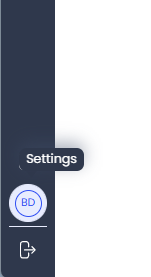
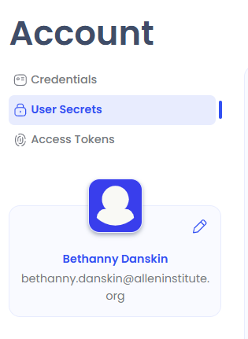
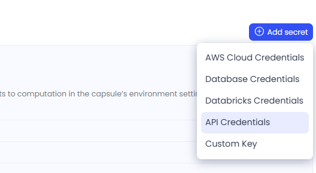
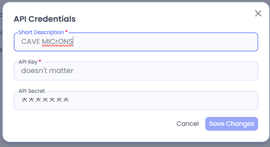
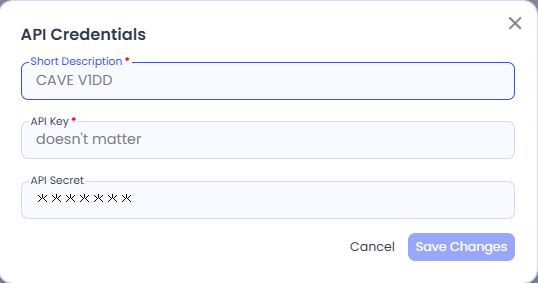
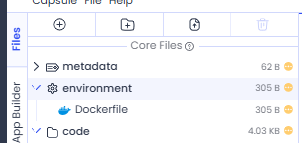
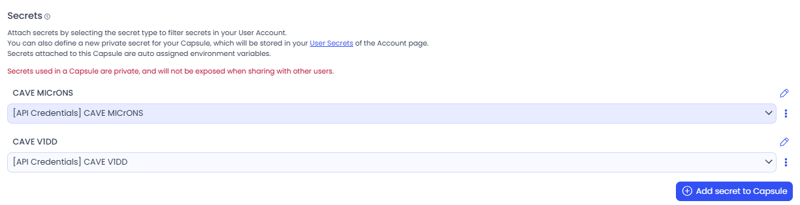
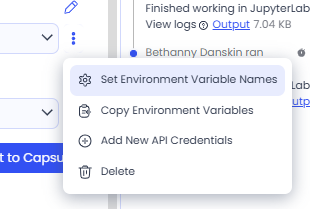
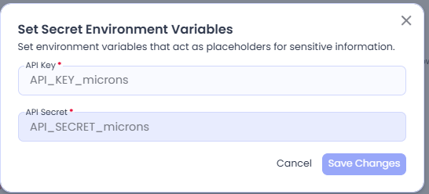

Setting up CAVEclient#
The CAVEclient is the main way to programmatically access the electron microscopy data using Python.This system works for both MICrONS and V1DD.
The Connectome Annotation Versioning Engine (CAVE) is a suite of tools developed at the Allen Institute and Seung Lab to manage large connectomics data. In particular, the CAVEclient provides an interface to query the CAVE database for annotations such as synapses, as well as to get a variety of other kinds of information.
Installation#
To install caveclient, use pip: pip install caveclient.
Once you have installed caveclient, to use it you need to set up your user token in one of the following ways:
Setting up credentials#
To access the data programmatically, you need to set up a user token. This token is assigned by the server and functions as a both a username and password to access any aspect of the data. You will need to save this token to your computer using the tools.ou can m
Scenario 1: New User, No Previous Account#
If you have never interacted with CAVE before, you will need to both create an account and get a token.
A Google account (or Google-enabled account) is required to create a CAVE account.
Run the dataset specific code block from below and follow the set up instructions; enter the token first, then enter ‘y’ when prompted
MICrONS#
# Import packages
from caveclient import CAVEclient
# Token Generation and Setup
CAVEclient.setup_token("https://global.daf-apis.com")
To check if your setup works, run the following:
# Initialize CAVEclient
client = CAVEclient(datastack_name="minnie65_public")
V1DD#
# Import packages
from caveclient import CAVEclient
# Token Generation and Setup
CAVEclient.setup_token("https://global.em.brain.allentech.org")
To check if your setup works, run the following:
# Initialize CAVEclient
client = CAVEclient(datastack_name="v1dd_public")
If you don’t get any errors, your setup has worked and you can move on
Scenario 2: Existing user, new computer#
If you have already created an account and token but not set up your computer yet, you can use the same token on a new computer.
MICrONS#
Visit https://global.daf-apis.com/sticky_auth/settings/tokens and copy an existing token or create a new one.
Copy this token, and save it to your computer using the following:
client.auth.save_token(server_address="https://global.daf-apis.com",
token=YOUR_TOKEN,
overwrite=True)
Note that the token must be formatted as a string.
To check if your setup works, run the following:
client = CAVEclient('minnie65_public')
V1DD#
Visit https://global.em.brain.allentech.org/sticky_auth/settings/tokens and copy an existing token or create a new one.
Copy this token, and save it to your computer using the following:
client.auth.save_token(server_address="https://global.em.brain.allentech.org",
token=YOUR_TOKEN,
overwrite=True)
Note that the token must be formatted as a string.
To check if your setup works, run the following:
client = CAVEclient('v1dd_public')
If you don’t get any errors, your setup has worked and you can move on!
Something went wrong?#
If you are using an older version of CAVEclient, it may not have the same onboarding module. Use the following instead:
# MICrONS
client.auth.setup_token(server_address="https://global.em.brain.allentech.org",
make_new=True)
# V1DD
client.auth.setup_token(server_address="https://global.daf-apis.com",
make_new=True)
Then enter the token as in Scenario 2 above
If you are still having trouble with authentication or permissions, it is probably because the token you are trying to use is not the one CAVE expects.
To find your current token, run the following code in a Jupyter notebook:
client = CAVEclient()
client.auth.token
The notebook will print the token your computer is sending to the server.
If this token is not the one you find from running the code in Scenario 2, double check that it is pointing to the datastack you want (MICrONS or V1DD) and force regenerate a token for the appropriate datastack as above.
CodeOcean Token setup#
If you want to use CAVEclient in Code Ocean, you can add your CAVE authentication token to your environment so you do not have to enter it every time you spin up a capsule.
This becomes slightly more complicated if you want TWO tokens (say, for V1DD and MICrONS). Here are step-by-step instructions for adding two tokens
Create your CAVE token secret(s)#
In Code Ocean, access your Account settings from the bottom left panel

Fig. 57 Access Account settings#
Under your Account, open your ‘User Secrets’

Fig. 58 name: Access ‘User Secrets’#
Add a new secret, from the menu on the upper right. Select ‘API Credentials’

Fig. 59 Access ‘User Secrets’#
Create a CAVE Token for MICrONS
Name it something distinctive.
The API Key does not matter
Enter your token as the secret. See your MICrONS tokens here https://global.daf-apis.com/sticky_auth/settings/tokens
Save Secret

Fig. 60 Save MICrONS secret#
Create a CAVE Token for V1DD
Name it something distinctive.
The API Key does not matter
Enter your token as the secret. See your V1DD tokens here https://global.em.brain.allentech.org/sticky_auth/settings/tokens
Save Secret

Fig. 61 Save V1DD secret#
Add the secret(s) to your capsule#
Open the environment tab of your Capsule

Fig. 62 Environment tab of capsule#
Scroll to the bottom, where you can ‘Add secret to capsule’
Add both the CAVE and V1DD credentials

Fig. 63 Add secret to capsule#
Rename the default ‘Environment Variable Name’: click on the three-dot menu to the right

Fig. 64 Select 3-dot menu to set the Environment variable names#
Rename the secret variable to something distinctive. Here: ‘API_SECRET_microns’ (key does not matter)

Fig. 65 Rename the API secret variable for easy look up in your code#
Repeat for the other token. For example: `API_SECRET_v1dd’ (key does not matter)
Initialize CAVE with dataset-specific token#
In a notebook or python file within your Capsule, import CAVEclient and OS
import os
`from caveclient import CAVEclient
Initialize MICrONS datastack (same pattern every time)
client = CAVEclient("minnie65_public", auth_token=os.environ["API_SECRET_microns"])
Initialize V1DD datastack
client = CAVEclient("v1dd_public", server_address="https://global.em.brain.allentech.org", auth_token=os.environ["API_SECRET_v1dd"])
Note: the addition of a
server_adddressargument. This is only necessary the first time you spin up V1DD in your capsule session. But is necessary every time you restart the capsule